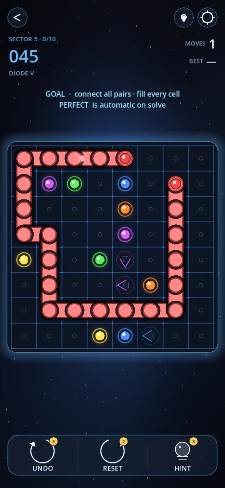
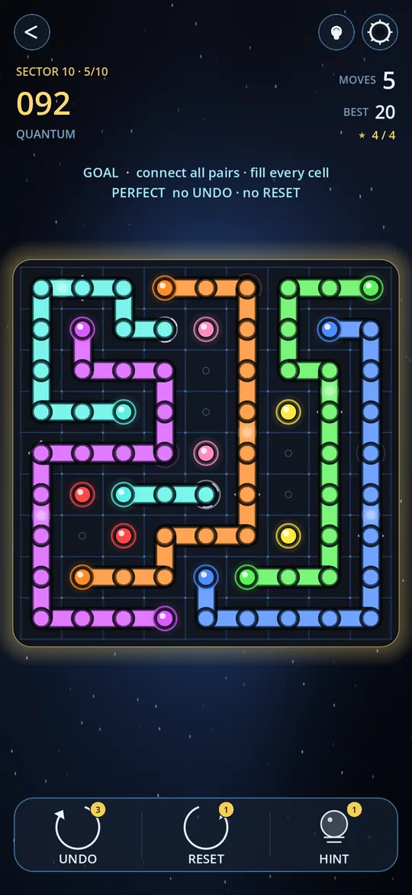

📅 16. November 2026 · ⏱ 5 Min. Lesezeit · ✍️ Grounded Studio
Eine Diode ist die einfachste Zusatzregel in Circuit Trace und eine der stärksten. Es ist ein Feld mit einem Pfeil darauf. Sie wirkt wie eine Einschränkung, aber wenn du sie lesen kannst, ist ein Pfeil vor allem ein Geschenk: Er sagt dir, wohin eine Linie als Nächstes geht.


Eine Linie darf eine Diode von jeder Seite betreten, muss sie aber in Pfeilrichtung verlassen. Das ist alles. Der Pfeil sagt nichts darüber, woher die Linie kommt, nur wohin sie nach dem Diodenfeld geht.
Zwei Details solltest du kennen:
Eine Diode liegt nie auf einem Punkt, eine Linie läuft also immer durch eine Diode und beginnt oder endet nie darauf.
Welche Linie die Diode auch nutzt, sie geht ins nächste Feld in Pfeilrichtung weiter. Weißt du, welche Farbe durch die Diode geht, kennst du schon zwei Felder ihrer Route.
Der häufigste Fehler ist, einen Pfeil wie einen Korridor zu behandeln. Eine Linie kann von hinten oder von einer der beiden Seiten kommen. Behalte alle drei Eingänge im Kopf.
Zeigt ein Pfeil direkt auf einen Punkt, ist die Linie durch diese Diode sehr oft die Farbe dieses Punkts, am Ende ihrer Route. Probiere das zuerst.
Ein Pfeil, der am Spielfeldrand entlang zeigt, schiebt seine Linie den Rand entlang, wo wenig Platz zum Abbiegen ist. Folge ihm ein paar Felder und schau, wohin er gezwungen wird.
Eine farbige Diode sagt dir, dass diese Farbe durch dieses Feld geht und in welche Richtung sie es verlässt. Das reicht oft, um den Großteil der Route zwischen ihren beiden Punkten zu skizzieren.
Wenn jedes Feld gefüllt werden muss, kann keine Diode übersprungen werden. Durch jede muss eine Linie, in ihre Richtung. Frag dich: „Wer kann diesen Pfeil von einer erlaubten Seite erreichen?“, und oft gibt es nur eine Antwort.
Stell dir ein 6×6-Feld vor mit einem weißen Pfeil in der Mitte der obersten Reihe, der nach unten zeigt. Welche Linie nutzt ihn? Keine Linie, die am oberen Rand von links nach rechts läuft, denn die müsste am Pfeil nach unten abbiegen und den Rand verlassen. Die Linie durch den Pfeil kommt also von links oder rechts (darüber ist nichts) und läuft dann nach unten ins Feld. Schau jetzt auf das Feld unter dem Pfeil: Es gehört zur selben Linie. Zwei Felder stehen fest, bevor du etwas gezeichnet hast, und die oberste Reihe ist in eine linke und eine rechte Hälfte geteilt, mit denen andere Farben getrennt klarkommen müssen. So funktionieren Pfeile: eine kleine Regel, mehrere geschenkte Züge.
Das Paket Dioden hat 100 Level auf Feldern von 6×6 bis 10×10. Es beginnt mit ein oder zwei Pfeilen pro Level und endet bei etwa sechs, und ab Sektor 5 muss jedes Feld gefüllt werden. Dioden gibt es auch in der Kampagne und in Arcade, gemischt mit Sternen und Checkpoints.
Wähle im Rätsel-Editor das Werkzeug ▶ DIODE und tippe auf ein Feld. Tippe dieselbe Diode erneut, um sie zu drehen: rechts, unten, links, oben, und ein weiterer Tipp entfernt sie. Für eine farbige Diode wählst du zuerst eine Farbe und setzt dann die Diode. Auf einen Punkt kann man keine Diode setzen. Die komplette Anleitung steht unter eigenes Flow-Puzzle erstellen.
Willst du sehen, was ein Pfeil ausmacht? Freunde können deinen Rätselcode im Browser auf der Code-spielen-Seite spielen, Dioden inklusive.
Sie ist ein Einbahnfeld. Eine Linie kann von jeder Seite hinein, muss es aber in Pfeilrichtung verlassen.
Eine weiße (neutrale) Diode lässt jede Farbe durch. Eine farbige Diode lässt nur die Linie ihrer eigenen Farbe durch.
Nein. Eine Diode liegt nie auf einem Punkt, eine Linie läuft also immer hindurch.